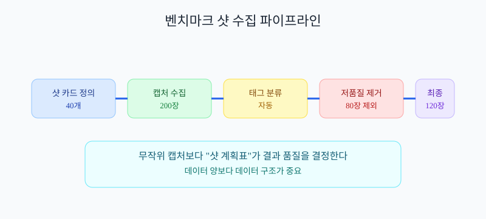

로스트아크처럼 보이는 월드를 AI 팀이 밤새 개선하게 하려면?
레벨/아트 같은 보이는 작업을 숫자로 바꾸는 실전 플레이북
Part 1. 왜 보이는 작업은 더 어렵게 느껴질까?
서버 코드 자동화는 감이 오는데, 레벨/아트는 왜 막막하지?
코드는 통과/실패가 비교적 명확해. 하지만 화면 품질은 눈대중 평가가 섞여서 모호해져.
그래서 먼저 해야 할 일은 "좋아 보임"을 숫자 기준으로 치환하는 거야.
| 작업 타입 | 기존 판단 | 에이전트가 일하려면 |
|---|---|---|
| 서버/DB | 응답시간, 오류율 | 이미 숫자 기반 |
| 레벨/아트 | "뭔가 애매해" | 가독성/유사도/성능 지표로 변환 |
채용 면접 비유
"느낌 좋은 사람"만으로 뽑으면 팀마다 기준이 달라져.
반면 체크리스트(기술, 커뮤니케이션, 과제 점수)가 있으면 누가 평가해도 결과가 비슷해져.
"느낌 좋은 사람"만으로 뽑으면 팀마다 기준이 달라져.
반면 체크리스트(기술, 커뮤니케이션, 과제 점수)가 있으면 누가 평가해도 결과가 비슷해져.
시각화: 모호한 판단 vs 숫자 판단

같은 화면도 사람마다 평가가 달라진다. 기준표가 있어야 자동화된다.
지금까지 한 줄 요약: 보이는 작업 자동화의 첫 단계는 "감상"을 "지표"로 바꾸는 것이다.
Part 2. 무엇을 숫자로 바꿔야 할까?
레벨/아트에서 꼭 숫자로 잡아야 할 항목은 뭐야?
많이 잡을수록 좋은 게 아니야. 처음엔 5개만 잡으면 충분해.
가독성, 동선, 스타일 유사도, 프레임 성능, 재작업률
| 지표 | 10초 정의 | 안 쓰면 생기는 문제 |
|---|---|---|
| 가독성 점수 | 적/오브젝트를 1~2초 내 식별 가능한 비율 | 예쁘지만 플레이가 답답함 |
| 동선 완주율 | 플레이봇이 목표 지점까지 도달한 비율 | 길찾기 막힘이 뒤늦게 발견됨 |
| 스타일 유사도 | 벤치마크와 화면 스타일이 닮은 정도 | 세계관 톤이 섞여 일관성 붕괴 |
| 프레임 성능 | FPS, 드로우콜, 메모리 예산 통과 여부 | 품질은 올라가도 실제 플레이 불가 |
| 재작업률 | 완료 후 다시 되돌아온 작업 비율 | 밤새 일했는데 결과가 쌓이지 않음 |
[레벨 작업 계약 예시]
Input:
- 벤치마크 캡처 120장
- 월드 콘셉트 문서 v1
Output:
- 마을 씬 v3
- 고정 카메라 8장 캡처
Check:
- 동선 완주율 95% 이상
- 스타일 유사도 0.78 이상
- 드로우콜 2200 이하
시각화: 지표 5개 대시보드

핵심 지표를 5개로 묶으면 초보자도 운영 흐름을 놓치지 않는다.
지금까지 한 줄 요약: 시작은 5개 지표면 충분하고, 지표가 없으면 자동화는 멈춘다.
Part 3. 로스트아크 벤치마킹 자료를 자동으로 모으려면?
AI가 스스로 자료를 모으고 판단하게 하려면 무엇부터 정해야 해?
핵심은 샷 계획표야. "어디서, 무엇을, 몇 장" 찍을지 먼저 고정해야 해.
무작위 캡처는 데이터는 많아도 학습 가치가 낮아.
| 샷 카드 필드 | 의미 | 예시 |
|---|---|---|
| 카메라 앵커 | 항상 같은 구도로 찍는 기준점 | 마을 광장 입구, 높이 1.7m |
| 태그 | 장면 성격 분류 | 마을, 상점거리, 낮, 군중밀집 |
| 품질 기준 | 통과/재촬영 조건 | 캐릭터 실루엣 가림 20% 이하 |
[벤치마크 수집 파이프라인]
1) 샷 카드 40개 정의
2) 게임 플레이/공개 영상에서 캡처 200장 수집
3) 태그 자동 분류 (마을/던전/전투)
4) 품질 점수 낮은 장면 제거
5) 최종 참조 세트 120장 확정
시각화: 벤치마크 샷 파이프라인

무작위 스샷이 아니라, 앵커 기반 샷 세트로 품질을 안정화한다.
지금까지 한 줄 요약: 벤치마킹 품질은 "많은 캡처"가 아니라 "좋은 샷 계획표"에서 나온다.
Part 4. 직무별 실행 플레이북은 어떻게 짤까?
레벨/아트/애니메이션처럼 서로 다른 직무도 같은 방식으로 돌릴 수 있어?
가능해. 직무는 달라도 구조는 같아.
입력 → 생성 → 검증 → 인수 4칸으로만 맞추면 된다.
| 직무 | 입력 | 출력 | 검증 기준 |
|---|---|---|---|
| 레벨 디자이너 에이전트 | 동선 요구사항, 벤치마크 샷 | 씬 배치안 vN | 동선 완주율 95% 이상 |
| 환경 아트 에이전트 | 스타일 가이드, 색상 팔레트 | 머티리얼/조명 세트 | 스타일 유사도 0.78 이상 |
| 애니메이션 에이전트 | 행동 목록, 리그 제약 | 클립 세트 | 발 미끄러짐 프레임 2% 이하 |
| 통합 에이전트 | 각 직무 산출물 | 엔진 씬 통합본 | FPS/메모리 예산 통과 |
식당 주방 비유
각 파트(샐러드, 메인, 디저트)가 다르게 일해도 접시 규격과 서빙 순서가 같으면 서비스가 돌아가.
직무별 플레이북도 똑같아. 자유도는 주되, 인수 형식은 고정해야 해.
각 파트(샐러드, 메인, 디저트)가 다르게 일해도 접시 규격과 서빙 순서가 같으면 서비스가 돌아가.
직무별 플레이북도 똑같아. 자유도는 주되, 인수 형식은 고정해야 해.
[피드백 티켓 포맷]
요청자 : 레벨 디자이너 에이전트
요청 내용 : 시장 골목 시야 가림 완화
근거 지표 : 가독성 점수 62 -> 목표 75
수정 기한 : 6시간
재검증 방법 : 고정 카메라 8장 + 플레이봇 20회
시각화: 직무별 플레이북 연결

직무가 달라도 인수 포맷을 통일하면 사람처럼 피드백 루프가 돌아간다.
지금까지 한 줄 요약: 직무별 자율성은 유지하되, 인수 규격을 통일해야 협업이 된다.
Part 5. 네가 자는 동안도 성과가 쌓이게 하려면?
"밤새 돌렸는데 남은 게 없다"를 막으려면 뭐가 필요해?
밤 자동화는 우선순위 큐 + WIP Limit + 성과 지표가 전부야.
성과 지표는 꼭 두 개를 본다: 완료량(Throughput), 작업 완료시간(Cycle Time).
| 운영 항목 | 기준값 예시 | 다음날 의사결정 |
|---|---|---|
| Throughput (시간당 완료 수) |
6개/h 이상 | 낮으면 병목 직무 추가 투입 |
| Cycle Time (착수~완료 시간) |
45분 이하 | 높으면 단계 분할 재설계 |
| 재작업률 | 20% 이하 | 높으면 체크 조건 강화 |
[Night Runbook - 생산성 전용]
22:00 우선순위 큐 확정 (최대 12개)
22:10 병렬 실행 (WIP=3)
01:00 중간 지표 체크
- Throughput >= 6/h ?
- Cycle Time <= 45m ?
03:00 재작업률 높은 작업 분해
06:00 아침 브리핑 자동 생성
- 완료 9개
- 평균 완료시간 42분
- 재작업률 18%
시각화: 야간 생산성 대시보드

밤 실행의 핵심은 "많이 돌렸는가"가 아니라 "얼마나 끝냈는가"다.
지금까지 한 줄 요약: 야간 자동화는 완료량/완료시간/재작업률 3지표로 관리해야 성과가 쌓인다.
Part 6. 초보자 기준 공부 순서(8주)
난 영어 나열만 나오면 막혀. 어떤 순서로 공부하면 돼?
영어 용어보다 실행 습관이 먼저야.
아래 순서대로 공부하면 "AI 팀 운영 감각"이 빠르게 붙는다.
| 주차 | 공부 주제 | 왜 이 순서인가? |
|---|---|---|
| 1주차 | 작업 계약서(Task Contract) 작성 | 모호함 제거가 모든 자동화의 시작 |
| 2주차 | 지표 5개 설계(가독성/동선/유사도/성능/재작업) | 보이는 작업을 숫자로 바꾸기 위해 |
| 3주차 | 벤치마크 샷 카드 만들기 | 참조 데이터 품질이 결과 품질을 결정 |
| 4주차 | 엔진 자동화(캡처/배치/검증 스크립트) | 수작업 반복을 기계 반복으로 치환 |
| 5주차 | 직무별 플레이북(레벨/아트/애니) | 역할별 입력/출력/검증 규격 통일 |
| 6주차 | 피드백 티켓 체계 | 사람 같은 협업 루프의 핵심 |
| 7주차 | 야간 운영(우선순위 큐 + WIP Limit) | 최소 개입으로 연속 생산성 확보 |
| 8주차 | 아침 브리핑 + 회고 루프 | 실패를 다음날 규칙으로 바꾸기 위해 |
[초보자용 핵심 용어 6개]
1) 작업 계약서 : 일을 시작/종료하는 규칙 문서
2) 벤치마크 샷 카드 : 참조 화면을 찍는 고정 규격
3) WIP 제한 : 동시에 벌릴 작업 개수 제한
4) Throughput(완료량) : 일정 시간 동안 끝낸 작업 수
5) Cycle Time(완료시간) : 작업 1개가 끝나기까지 걸린 시간
6) 재작업률 : 완료 후 되돌아온 작업 비율
지금까지 한 줄 요약: "작업 계약 -> 지표 -> 샷 카드 -> 자동화 -> 직무 플레이북 -> 야간 운영" 순서로 가면 된다.
📌 핵심 정리: 보이는 작업 자동화의 제일 원리
- 감상은 지표로: 모호한 화면 평가는 자동화가 불가능하다
- 시작은 5지표: 가독성, 동선, 유사도, 성능, 재작업률
- 벤치마킹 핵심: 무작위 캡처가 아니라 샷 카드 기반 수집
- 직무 협업 핵심: 입력/출력/검증/인수 규격 통일
- 야간 운영 핵심: Throughput, Cycle Time, 재작업률 관리
- 학습 순서 핵심: 계약서부터 시작해서 플레이북으로 확장